Zovo Pro
Every Zovo extension is free and stays free. Zovo Pro adds extra tools to the Zovo viewers, USD 19 once for life, or USD 59 once for a team of 5. Each Pro tool works 3 times before you pay.
Zovo is made by BeLikeNative. The card page says "Pay BeLikeNative", and your card statement shows ZOVO PRO.
Before you pay
- Try first. Each Pro tool works 3 times on your computer, with no key and no account.
- Free stays free. No feature that has shipped as free will move behind Pro.
- USD 19 once for one person, for life, in every Zovo extension that has Pro tools. USD 59 once for a team of 5 people who share one key. No subscription.
- Card payment through Stripe, with no account. Apple Pay, Google Pay and Link show up where your browser offers them.
- Nothing about Pro shows when you open a file. No startup popup, no countdown, no banner.
How the key arrives and where it goes
- Pay by card. The next page shows your license key, which starts with ZOVO1., and a "Copy key" button. Keep that link; it shows the same key again.
- Go back to VS Code, Cursor or Windsurf. In the Zovo Pro window of any Pro tool, click "Enter a key". Or open the Command Palette (Ctrl+Shift+P, on a Mac Cmd+Shift+P) and run "Zovo Pro: Enter Zovo Pro license key".
- Paste the key. It is checked on your computer, with no network call. Pro turns on at once in every Zovo extension on that computer.
A team key works the same way. Pay USD 59 by card, and each of the 5 people pastes the same key.
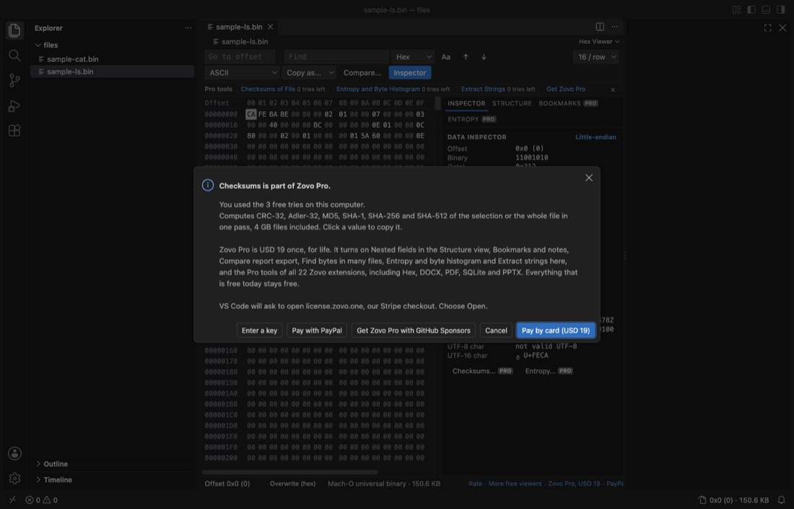
Other ways to pay
- GitHub Sponsors. Pick the "$19 one time" tier on GitHub Sponsors, then pick "Unlock with GitHub Sponsors" in the extension and sign in with the same GitHub account. A monthly sponsorship of USD 10 or more that is still running counts too.
- PayPal. Send USD 19 to www.paypal.com/paypalme/najzzz/19 (USD 59 for a team, www.paypal.com/paypalme/najzzz/59) with "Zovo Pro" in the note. The key comes by email within a day, to the address PayPal shows us.
- Team of 5 on GitHub Sponsors, the "$59 one time" tier. The key comes by email within 24 hours.
What Pro adds, in the 10 most installed Zovo extensions
Each list comes from the extension's own README and commands. The screenshots are from the release checks, not mockups.
Hex Viewer
On the Marketplace now, version 0.3.10. Everything else in this extension is free.
- Structure view, nested fields, every level of the 26 built-in binary templates (ELF symbols, PE imports and resources and more) and your own templates, with export as JSON or C.
- Bookmarks, a name, a color and a note per bookmark, saved per file, with export as Markdown.
- Checksums, CRC-32, Adler-32, MD5, SHA-1, SHA-256 and SHA-512 of the selection or the whole file, 4 GB files included.
- Compare report, every differing range of two files to a text, CSV or JSON file.
- Find in files, hex bytes with ?? wildcards or text, in many files or whole folders.
- Extract strings, every ASCII and UTF-16 string with its offset, with a filter and export as CSV or text.
- Entropy and byte histogram, finds padding, text, code and compressed or encrypted parts of a file, with a Markdown and CSV report.
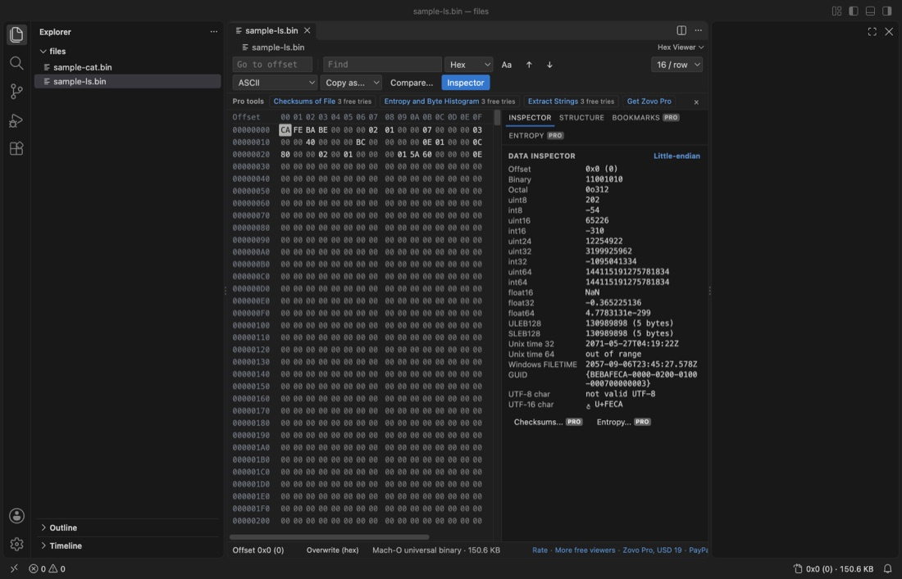
DOCX Viewer
On the Marketplace now, version 0.4.10. Everything else in this extension is free.
- Export redline as Word, a new .docx with real tracked changes that Word and LibreOffice can accept or reject one by one.
- Export redline as PDF, a paginated PDF with a summary page, inserted text green, deleted text red and moved text blue.
- Export redline as HTML, one HTML file of the compare that prints to PDF.
- Export change list, every change between two versions as a numbered list with its section, old text and new text.
- Compare two folders, all documents of two folders compared in one go.
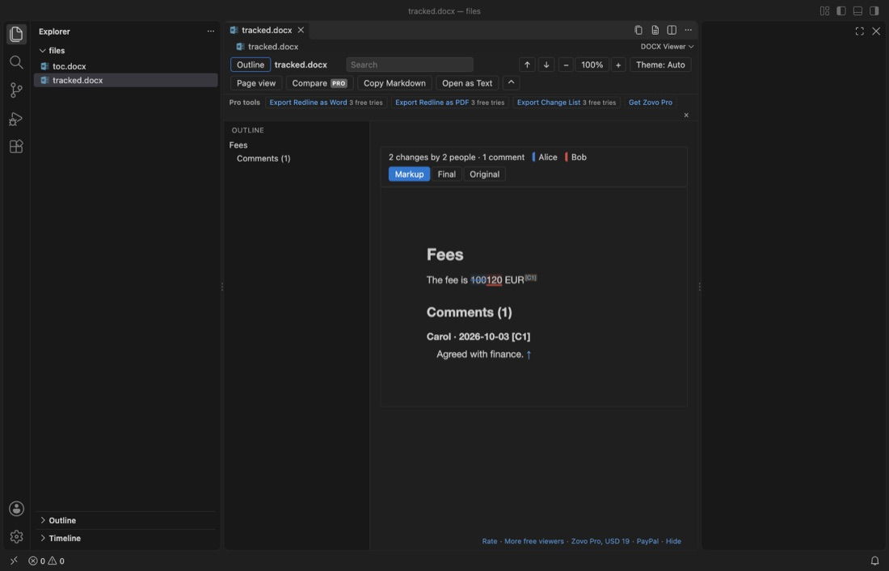
PPTX Viewer
On the Marketplace now, version 0.5.7. Everything else in this extension is free.
- Export slides as PNG, every slide of a deck as a PNG file.
- Export deck as PDF, the whole deck as one PDF.
- Convert decks to Markdown, every deck in a folder, with titles, bullet levels, tables and speaker notes.
- Compare two decks, two versions of a deck slide by slide, or a deck against its last Git commit.
- Compress deck, a smaller copy of a deck with big photos (Screen, Email or Print size); the original is not changed.
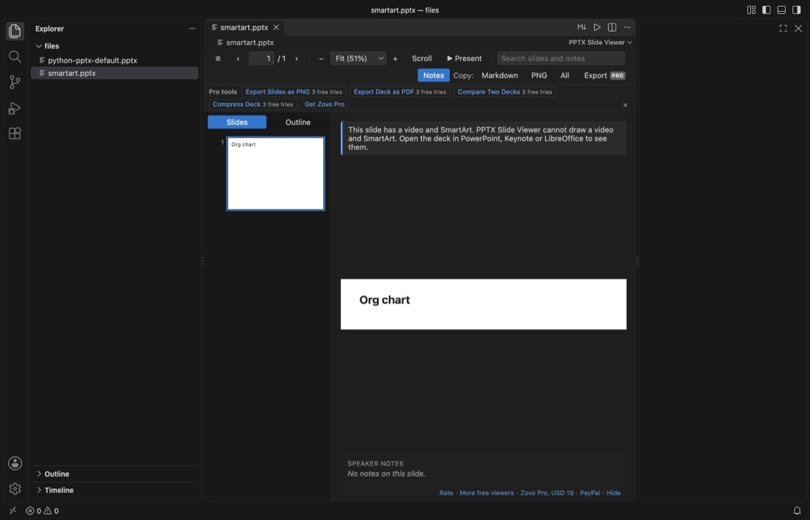
XLSX Viewer and CSV Viewer
On the Marketplace now, version 0.5.9. Everything else in this extension is free.
- Whole-file queries, a query reads the whole file when the table shows only its first rows, for example GROUP BY over a CSV of several GB.
- JOIN with other files, join the open table with other CSV, TSV, Excel and Parquet files of the workspace.
- Save as Parquet, the rows in view or a query result as a typed, compressed Parquet file.
- Combine files and sheets, many CSV, TSV, Excel, ODS and Parquet files, a folder, or all sheets of a workbook into one file.
- Split table by column value, one CSV file per value of a column, or one workbook with a sheet per value.
- Larger limits, 5,000,000 rows, 2 GB CSV and 200 MB Excel files out of the box.
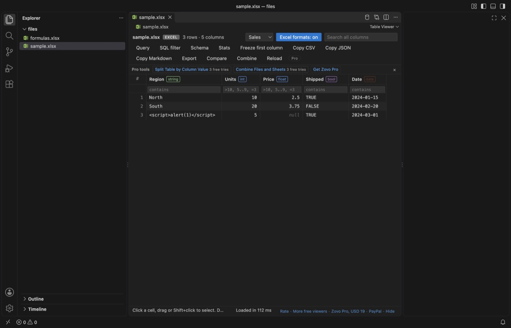
PDF Viewer
On the Marketplace now, version 0.3.8. Everything else in this extension is free.
- Page tools, extract, delete, reorder or split pages into a new PDF.
- Merge PDFs, two or more PDFs joined into one.
- Compare two PDFs, the text of two PDFs page by page, or a PDF against its last Git commit.
- Highlights of all PDFs, the highlights of every PDF in the workspace in one Markdown file.
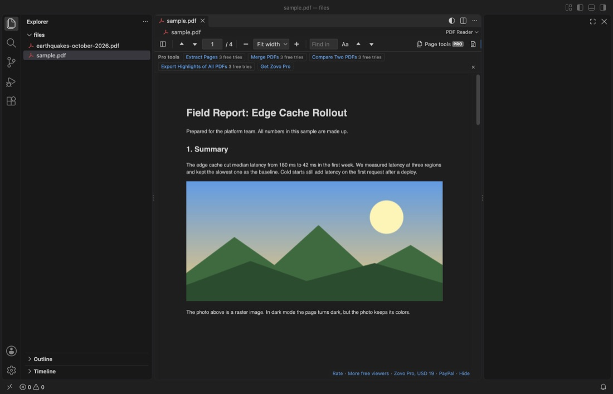
Tensor Viewer (NumPy, PyTorch, GGUF, Safetensors)
On the Marketplace now, version 0.6.7. Everything else in this extension is free.
- Compare two checkpoints, every value of every tensor of two files, with max and mean difference, RMSE and cosine similarity per tensor, across formats.
- Scan all tensors, every value read, not a sample; flags NaN, Inf, all-zero and constant tensors, with exact min, max, mean and std.
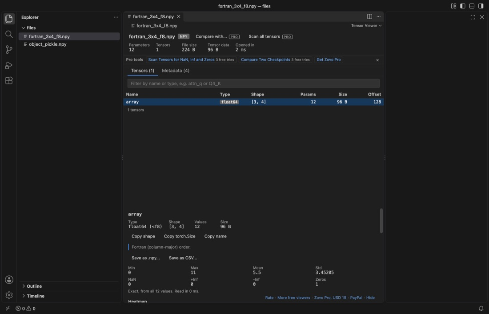
Mermaid Viewer
On the Marketplace now, version 0.3.5. Everything else in this extension is free.
- Export diagrams to PDF, every diagram of a file in one PDF with a title page.
- Export all diagrams in the workspace, every diagram of every .mmd and Markdown file to SVG, PNG or both, in the same folder layout.
- Export on save, keeps SVG or PNG files next to the source up to date each time you save.
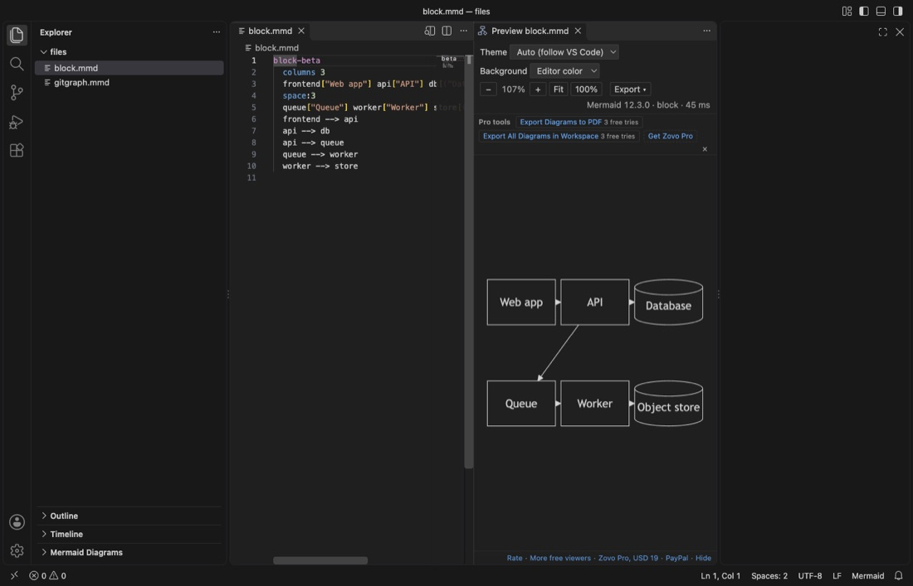
SQLite Viewer
On the Marketplace now, version 0.4.6. Everything else in this extension is free.
- Compare SQLite databases, tables, columns, indexes and rows of two files, a Markdown report and a sync script that you run yourself.
- ER diagram, an SVG and a Mermaid diagram of tables, keys and foreign keys, plus a Markdown schema file.
- Export all tables, one Excel workbook with a sheet per table, or one CSV file per table.
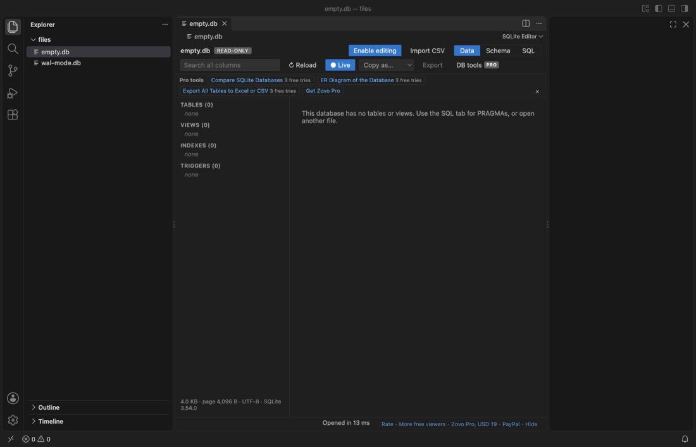
NetCDF and HDF5 Viewer
On the Marketplace now, version 0.6.5. Everything else in this extension is free.
- Compare two files, like nccmp: changed variables, shapes and attributes, and per variable the max and mean difference and RMSE.
- Export a subset, like ncks -d: pick ranges by index, coordinate value or date, save as NetCDF or CSV.
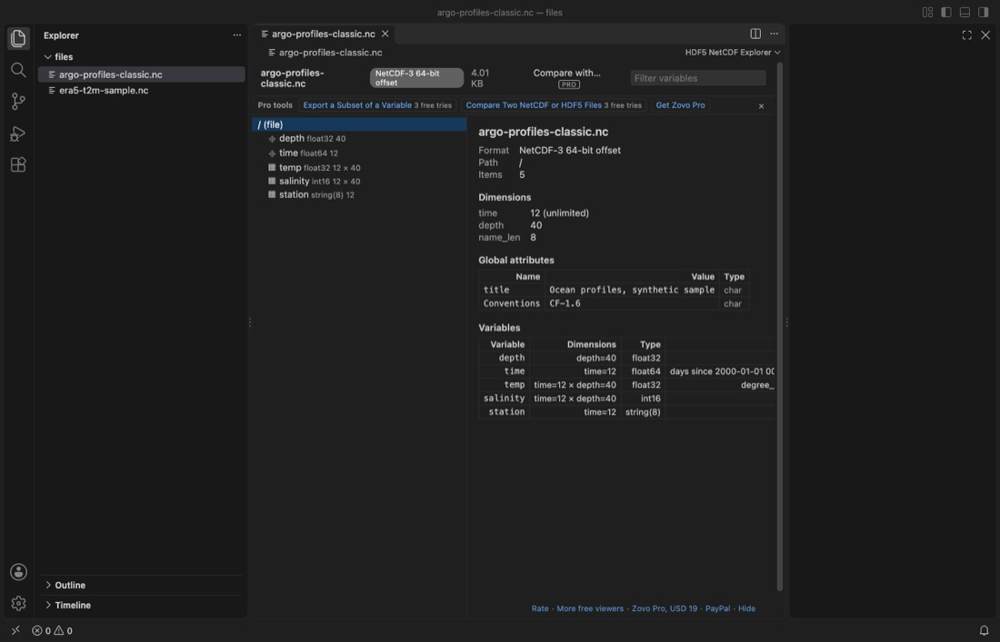
Video Player with Sound
On the Marketplace now, version 0.3.5. Everything else in this extension is free.
- Clip export, the part between A and B, or the whole video, as a GIF or an MP4 clip.
- Frame export, frames saved as numbered PNG files.
- Contact sheet, one image with frames from the whole video.
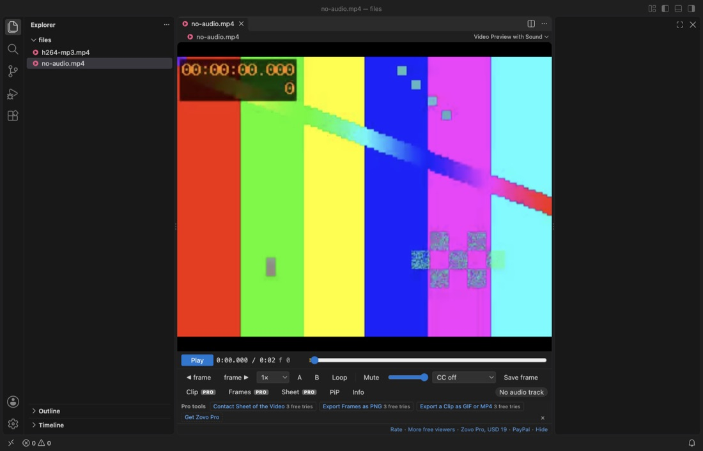
Some other Zovo extensions have Pro tools too, and the same key turns them on. Most Zovo extensions have no Pro tools and are free.
Questions before you buy
Ask first. Open an issue on GitHub with your question, and the answer comes there. The issue is public, so do not post your email address or a key.
Need your format supported?
Open a format request with a sample file, and I reply there whether it can be done. For USD 299 once, through this GitHub Sponsors tier, I add your file format or a missing feature to a Zovo viewer, with tests, within 7 days.
This is separate from Zovo Pro. Zovo Pro adds ready-made tools for everyone. Custom format support is work for you: a format or feature you need, added to the free viewer for every user, so it stays free there too.
Questions
Who sells Zovo Pro?
Zovo is made by BeLikeNative. The card page says "Pay BeLikeNative", and your card statement shows ZOVO PRO. The payment runs through Stripe.
Will anything that is free today become paid?
No. Every feature that has shipped as free stays free, in every later version. Pro only adds tools on top.
How much is it, and is it a subscription?
USD 19 once for one person, for life. USD 59 once for a team of 5 people who share one key. No subscription and no renewal.
Can I try a Pro tool first?
Yes. Each Pro tool works 3 times on your computer with no key and no account. The row under the toolbar shows how many tries are left.
How does the key arrive?
After a card payment the next page shows your key, which starts with ZOVO1., and a "Copy key" button. The same link shows the key again later. With PayPal or GitHub Sponsors the steps differ; see "Other ways to pay" above.
Do I have to enter the key in each extension?
No. Enter the key once. Pro turns on in every Zovo extension on that computer. On a second computer, enter the same key there.
Does the extension call home?
No. The key is checked on your computer, with no network call and no account. No tracking and no telemetry. The only network request is one GitHub check, and only if you pick "Unlock with GitHub Sponsors".
Does it work in Cursor, Windsurf and VSCodium?
Yes, with a key. The extensions install there from Open VSX, and the key check runs on your computer.
Can I pay without a card?
Yes. Pick the "$19 one time" tier on GitHub Sponsors, or pay USD 19 by PayPal (USD 59 for a team by PayPal) with "Zovo Pro" in the note and get a key by email within a day.
I lost my key.
Open the link of the page that showed it, or reply to the email that brought it. You can also open an issue without posting the key.
Will I see ads or popups?
No. No startup message, no countdown and no banner. A Pro tool asks for a key only when you click it after its 3 free tries.
Does Pro cover the JetBrains plugins?
No. Zovo Pro is for the VS Code extensions. The JetBrains plugins are separate.
Facts on this page were checked on 12 November 2026. If something here is wrong, open an issue.
Support this work
Zovo builds and maintains every tool on this site. If one saves you time, you can support the work on GitHub Sponsors. Monthly tiers start at $5, and one-time tiers start at $15. Sponsorship is optional, and the tools work the same without it.